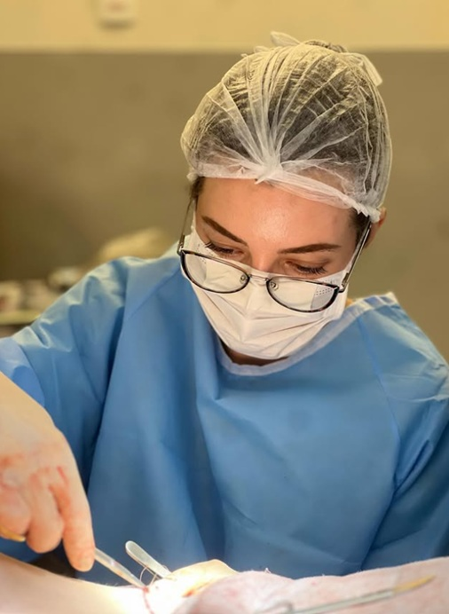

“Recomendo muitíssimo... minha mãe e meu pai amaram o atendimento.”Thaïs Chauvell
Lifting cervical em Pinheiros
Lifting cervical para definição do pescoço e contorno mandibular.
O lifting cervical pode ser indicado quando há flacidez, bandas no pescoço ou perda do ângulo entre mandíbula e pescoço. A avaliação diferencia pele, músculo, gordura e estrutura facial.
Atendimento na Clínica LIV Faria Lima, em Pinheiros. Consulta presencial e teleconsulta em casos selecionados.

MédicaDra. Amanda Schroeder
RegistroCRM-SP 191605 · RQE 110472
FormaçãoUNICAMP · HC-UNICAMP · Einstein
LocalizaçãoPinheiros · perto da Faria Lima
Avaliações no Google
★★★★★
Depoimentos destacam acolhimento, competência técnica e cuidado humano.
“Grande conhecimento técnico, atencioso e empático durante a consulta.”Marina Silva
“Experiência, profissionalismo e um acolhimento humano que faz toda a diferença.”Raphaela Garofo
Indicação
Nem toda papada é gordura, e nem todo pescoço pede a mesma cirurgia.
Flacidez de pele, bandas do platisma, gordura superficial ou profunda e perda de contorno mandibular exigem diagnósticos distintos. Por isso, o tratamento pode envolver lipo, lifting cervical, lifting facial ou associação.
Bandas cervicais
Pregas musculares verticais podem exigir abordagem diferente da lipo de papada.
Flacidez
Quando a pele perdeu elasticidade, retirar gordura isoladamente pode não entregar o contorno esperado.
Contorno mandibular
A transição rosto-pescoço precisa ser analisada de frente, perfil e movimento.
Quando pode não ser indicado
Às vezes o problema não é só o pescoço.
Quando a flacidez facial acompanha o pescoço, tratar apenas a região cervical pode gerar desarmonia. Em outros casos, se a queixa é só gordura localizada, lipo de papada pode ser suficiente.

Consulta presencial1 2 3 4
O diagnóstico define se o tratamento é cervical, facial ou combinado.
Na consulta, a Dra. Amanda avalia pele, músculo, gordura, mandíbula, queixo e relação com a face. A conversa inclui cicatrizes, recuperação, limitações e possibilidade de associação com lifting facial.
Diagnóstico
Separar pele, gordura, músculo e estrutura.
Indicação
Definir se lipo, lifting ou associação faz sentido.
Recuperação
Planejar afastamento, edema, faixa e retornos.
Segurança
Exames e preparo antes do procedimento.
IndicaçãoQual estrutura precisa ser tratada.
AlternativasLipo, lifting ou associação com face.
RecuperaçãoEdema, cicatrizes e retorno social.
Próximos passosExames, orçamento e preparo.
Segurança pré-operatória
Entender preparoAvaliação clínica integrada ao preparo cirúrgico.
Para cirurgias realizadas pela clínica, a avaliação cardiológica pré-operatória pode integrar o protocolo de segurança da LIV, conforme o planejamento e a avaliação clínica.
Expectativa realista
Melhorar contorno não é apagar todos os sinais do tempo.
O objetivo é melhorar a definição do pescoço e da mandíbula com naturalidade. Cicatrização, flacidez e qualidade da pele influenciam o resultado.

Pescoço e contorno
Imagem educativa da região cervical. A indicação depende do exame presencial.

Planejamento técnico
Cada plano considera cicatriz, anatomia e expectativa individual.
Resultados variam e não devem ser interpretados como promessa. A indicação depende de consulta médica.
Conteúdos da Dra. Amanda
Conteúdos para avaliar pescoço, mandíbula e flacidez.
Seleção para quem quer entender diferença entre lipo de papada, lifting cervical e tratamentos associados.
Lifting cervical e pescoço
Um vídeo para começar a entender a região cervical.
Post no InstagramIndicação no pescoço
Ajuda a separar gordura, pele e músculo.
Post no InstagramContorno cervicalConteúdo sobre definição e harmonia rosto-pescoço.
Post no InstagramTécnicas para o pescoçoMostra por que a técnica muda conforme a anatomia.
Post no InstagramLimites da lipo isoladaÚtil para quem pensa que toda papada é igual.
Post no InstagramFace e pescoço em conjuntoRelaciona lifting facial e cervical quando necessário.
Post no InstagramPlanejamento de liftingComplementa a tomada de decisão com expectativas realistas.
Os conteúdos do Instagram complementam a orientação, mas não substituem consulta médica presencial. Alguns vídeos podem abrir controles próprios do Instagram conforme o navegador.
FAQ
Dúvidas frequentes sobre lifting cervical.
Lifting cervical é o mesmo que lipo de papada?
Não. Lipo de papada trata gordura localizada. Lifting cervical pode tratar flacidez de pele, músculo e perda do contorno do pescoço.
Como saber se minha papada é gordura ou flacidez?
O exame avalia gordura superficial, gordura profunda, pele, músculo platisma, mandíbula e queixo. A indicação depende dessa diferenciação.
O pescoço pode ser tratado sem face?
Às vezes sim, mas quando a flacidez facial acompanha o pescoço, tratar apenas a região cervical pode gerar desarmonia.
A cicatriz fica onde?
O posicionamento depende da técnica e da extensão. A consulta explica possibilidades e limites para cada anatomia.
Faixa cervical é necessária?
Pode ser indicada conforme o procedimento. O uso, tempo e cuidados são orientados no pós-operatório.
Pinheiros/Faria Lima
Rua Pais Leme, 215 · Conj. 710 · Pinheiros · São Paulo. Teleconsultas em casos selecionados, especialmente para orientação inicial ou pacientes de fora de São Paulo.
Primeiro contato
Como funciona ao solicitar uma avaliação.
Ao enviar uma mensagem, a equipe entende sua queixa principal, orienta sobre o formato da consulta e informa os próximos passos com discrição. A avaliação pode ser presencial em Pinheiros ou, em casos selecionados, por teleconsulta inicial. O atendimento é particular; a equipe informa valores da consulta, disponibilidade, nota fiscal e próximos passos.
Queixa principal
Você informa o que deseja avaliar e há quanto tempo isso incomoda.
Orientação da equipe
A equipe explica consulta, agenda, valores e emissão de nota fiscal.
Avaliação médica
Na consulta, a Dra. Amanda define indicação, limites, segurança e próximos passos.
Quer avaliar o pescoço com segurança?
Solicite uma consulta presencial com a Dra. Amanda em Pinheiros/Faria Lima.